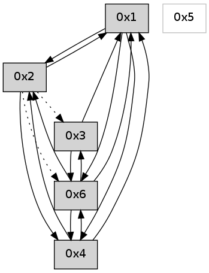

>> << IDX [start] -100 -25 -5 +0 +5 +25 +100 [635.009122133]
 Previous packets
----------------------------------------------------------------------
630.048079 beacon01(adaf) #0 coord=01,02,05,03,04,06 cycle=432.0ms assoc
-- color-indic=0 64 01 74
630.058039 beacon02(adaf) #0 coord=01,02,05,03,04,06 cycle=432.0ms assoc 64 50 8b
630.068041 beacon05(adaf) #0 coord=01,02,05,03,04,06 cycle=432.0ms assoc 64 f6 a1
630.078041 beacon03(adaf) #0 coord=01,02,05,03,04,06 cycle=432.0ms assoc 64 6a 85
630.088042 beacon04(adaf) #0 coord=01,02,05,03,04,06 cycle=432.0ms assoc 64 cc af
630.098042 beacon06(adaf) #0 coord=01,02,05,03,04,06 cycle=432.0ms assoc 64 b8 b3
630.109753 [Hello(2): seq=925 sym=1 asym=6,3 sysInfo= stat=1:12,0,0,0/6:1,0,0,0/3:5,0,0,0]
630.112315 [Hello(1): seq=330 sym=2,4,6 sysInfo= stat=2:3,0,0,0/4:4,0,0,0/6:1,0,0,0]
630.115149 [Hello(4): seq=431 sym=1,2 asym=6 sysInfo= stat=1:4,0,0,0/2:6,0,0,0/6:3,0,0,0]
----------------------------------------------------------------------
630.540187 beacon01(adaf) #0 coord=01,02,05,03,04,06 cycle=432.0ms assoc
-- color-indic=0 64 c5 1b
630.550148 beacon02(adaf) #0 coord=01,02,05,03,04,06 cycle=432.0ms assoc 64 94 e4
630.560148 beacon05(adaf) #0 coord=01,02,05,03,04,06 cycle=432.0ms assoc 64 32 ce
630.570148 beacon03(adaf) #0 coord=01,02,05,03,04,06 cycle=432.0ms assoc 64 ae ea
630.580149 beacon04(adaf) #0 coord=01,02,05,03,04,06 cycle=432.0ms assoc 64 08 c0
630.590150 beacon06(adaf) #0 coord=01,02,05,03,04,06 cycle=432.0ms assoc 64 7c dc
630.601794 [Hello(6): seq=346 sym=3,4,1 sym= sysInfo= stat=]
----------------------------------------------------------------------
631.032294 beacon01(adaf) #0 coord=01,02,05,03,04,06 cycle=432.0ms assoc
-- color-indic=0 64 89 ab
631.042257 beacon02(adaf) #0 coord=01,02,05,03,04,06 cycle=432.0ms assoc 64 d8 54
631.052256 beacon05(adaf) #0 coord=01,02,05,03,04,06 cycle=432.0ms assoc 64 7e 7e
631.062256 beacon03(adaf) #0 coord=01,02,05,03,04,06 cycle=432.0ms assoc 64 e2 5a
631.072256 beacon04(adaf) #0 coord=01,02,05,03,04,06 cycle=432.0ms assoc 64 44 70
631.082257 beacon06(adaf) #0 coord=01,02,05,03,04,06 cycle=432.0ms assoc 64 30 6c
631.093936 [Hello(4): seq=432 sym=6,1,2 sysInfo= stat=6:4,0,0,0/1:4,0,0,0/2:6,0,0,0]
631.097344 [Hello(1): seq=331 sym=2,4,6 sysInfo= stat=2:3,0,0,0/4:5,0,0,0/6:2,0,0,0]
----------------------------------------------------------------------
631.524402 beacon01(adaf) #0 coord=01,02,05,03,04,06 cycle=432.0ms assoc
-- color-indic=0 64 4d c4
631.534363 beacon02(adaf) #0 coord=01,02,05,03,04,06 cycle=432.0ms assoc 64 1c 3b
631.544363 beacon05(adaf) #0 coord=01,02,05,03,04,06 cycle=432.0ms assoc 64 ba 11
631.554364 beacon03(adaf) #0 coord=01,02,05,03,04,06 cycle=432.0ms assoc 64 26 35
631.564363 beacon04(adaf) #0 coord=01,02,05,03,04,06 cycle=432.0ms assoc 64 80 1f
631.574365 beacon06(adaf) #0 coord=01,02,05,03,04,06 cycle=432.0ms assoc 64 f4 03
631.586025 [Hello(6): seq=347 sym=3,4,1 sysInfo= stat=3:7,0,0,0/4:0,0,0,0/1:7,0,0,0]
----------------------------------------------------------------------
632.016509 beacon01(adaf) #0 coord=01,02,05,03,04,06 cycle=432.0ms assoc
-- color-indic=0 64 68 f9
632.026470 beacon02(adaf) #0 coord=01,02,05,03,04,06 cycle=432.0ms assoc 64 39 06
632.036470 beacon05(adaf) #0 coord=01,02,05,03,04,06 cycle=432.0ms assoc 64 9f 2c
632.046471 beacon03(adaf) #0 coord=01,02,05,03,04,06 cycle=432.0ms assoc 64 03 08
632.056470 beacon04(adaf) #0 coord=01,02,05,03,04,06 cycle=432.0ms assoc 64 a5 22
632.066471 beacon06(adaf) #0 coord=01,02,05,03,04,06 cycle=432.0ms assoc 64 d1 3e
632.078129 [Hello(4): seq=433 sym=6,1,2 sysInfo= stat=6:5,0,0,0/1:5,0,0,0/2:6,0,0,0]
632.081246 [Hello(1): seq=332 sym=2,4,6 sysInfo= stat=2:3,0,0,0/4:5,0,0,0/6:3,0,0,0]
632.083581 [Hello(2): seq=927 sym=4,1 asym=6,3 sysInfo= stat=4:0,0,0,0/1:14,0,0,0/6:3,0,0,0/3:5,0,0,0]
----------------------------------------------------------------------
632.508619 beacon01(adaf) #0 coord=01,02,05,03,04,06 cycle=432.0ms assoc
-- color-indic=0 64 ac 96
632.518581 beacon02(adaf) #0 coord=01,02,05,03,04,06 cycle=432.0ms assoc 64 fd 69
632.528580 beacon05(adaf) #0 coord=01,02,05,03,04,06 cycle=432.0ms assoc 64 5b 43
632.538580 beacon03(adaf) #0 coord=01,02,05,03,04,06 cycle=432.0ms assoc 64 c7 67
632.548581 beacon04(adaf) #0 coord=01,02,05,03,04,06 cycle=432.0ms assoc 64 61 4d
632.558581 beacon06(adaf) #0 coord=01,02,05,03,04,06 cycle=432.0ms assoc 64 15 51
632.570277 [Hello(6): seq=348 sym=3,4,1,2 sysInfo= stat=3:8,0,0,0/4:0,0,0,0/1:8,0,0,0/2:0,0,0,0]
----------------------------------------------------------------------
633.000727 beacon01(adaf) #0 coord=01,02,05,03,04,06 cycle=432.0ms assoc
-- color-indic=0 64 e0 26
633.010688 beacon02(adaf) #0 coord=01,02,05,03,04,06 cycle=432.0ms assoc 64 b1 d9
633.020690 beacon05(adaf) #0 coord=01,02,05,03,04,06 cycle=432.0ms assoc 64 17 f3
633.030689 beacon03(adaf) #0 coord=01,02,05,03,04,06 cycle=432.0ms assoc 64 8b d7
633.040688 beacon04(adaf) #0 coord=01,02,05,03,04,06 cycle=432.0ms assoc 64 2d fd
633.050689 beacon06(adaf) #0 coord=01,02,05,03,04,06 cycle=432.0ms assoc 64 59 e1
633.062367 PARSE ERROR************************
Traceback (most recent call last):
File "PacketAnalysis.py", line 167, in showOperaPacket
structPacket = OperaPacketParse.parsePacket(rawPacket)
File "../../pkg-python/HipSens/Core/OperaPacketParse.py", line 461, in parsePacket
return parseHelloMessage(data)
File "../../pkg-python/HipSens/Core/OperaPacketParse.py", line 109, in parseHelloMessage
sysInfo,stability,colorInfo = struct.unpack("!HBB", linkList[0:4])
error: unpack requires a string argument of length 4
48 1c 04 00 01 b2 00 02 02 06 06 00 01 00 02 00 53 04 00 00 00 00 4c 06 00 06 00 06 00 07 53 5d
633.068337 [Hello(1): seq=333 sym=2,4,6 sysInfo= stat=2:4,0,0,0/4:5,0,0,0/6:4,0,0,0]
----------------------------------------------------------------------
633.492835 beacon01(adaf) #0 coord=01,02,05,03,04,06 cycle=432.0ms assoc
-- color-indic=0 64 24 49
633.502797 beacon02(adaf) #0 coord=01,02,05,03,04,06 cycle=432.0ms assoc 64 75 b6
633.512796 beacon05(adaf) #0 coord=01,02,05,03,04,06 cycle=432.0ms assoc 64 d3 9c
633.522796 beacon03(adaf) #0 coord=01,02,05,03,04,06 cycle=432.0ms assoc 64 4f b8
633.532798 beacon04(adaf) #0 coord=01,02,05,03,04,06 cycle=432.0ms assoc 64 e9 92
633.542798 beacon06(adaf) #0 coord=01,02,05,03,04,06 cycle=432.0ms assoc 64 9d 8e
633.554479 [Hello(6): seq=349 sym=3,4,1,2 sysInfo= stat=3:9,0,0,0/4:0,0,0,0/1:9,0,0,0/2:0,0,0,0]
----------------------------------------------------------------------
633.984942 beacon01(adaf) #0 coord=01,02,05,03,04,06 cycle=432.0ms assoc
-- color-indic=0 64 69 4e
633.994902 beacon02(adaf) #0 coord=01,02,05,03,04,06 cycle=432.0ms assoc 64 38 b1
634.004903 beacon05(adaf) #0 coord=01,02,05,03,04,06 cycle=432.0ms assoc 64 9e 9b
634.014904 beacon03(adaf) #0 coord=01,02,05,03,04,06 cycle=432.0ms assoc 64 02 bf
634.024903 beacon04(adaf) #0 coord=01,02,05,03,04,06 cycle=432.0ms assoc 64 a4 95
634.034904 beacon06(adaf) #0 coord=01,02,05,03,04,06 cycle=432.0ms assoc 64 d0 89
634.046574 [Hello(4): seq=435 sym=6,1,2 sysInfo= stat=6:7,0,0,0/1:7,0,0,0/2:7,0,0,0]
634.052871 [Hello(1): seq=334 sym=2,4,6 sysInfo= stat=2:4,0,0,0/4:5,0,0,0/6:5,0,0,0]
----------------------------------------------------------------------
634.477052 beacon01(adaf) #0 coord=01,02,05,03,04,06 cycle=432.0ms assoc
-- color-indic=0 64 ad 21
634.487012 beacon02(adaf) #0 coord=01,02,05,03,04,06 cycle=432.0ms assoc 64 fc de
634.497013 beacon05(adaf) #0 coord=01,02,05,03,04,06 cycle=432.0ms assoc 64 5a f4
634.507014 beacon03(adaf) #0 coord=01,02,05,03,04,06 cycle=432.0ms assoc 64 c6 d0
634.517015 beacon04(adaf) #0 coord=01,02,05,03,04,06 cycle=432.0ms assoc 64 60 fa
634.527013 beacon06(adaf) #0 coord=01,02,05,03,04,06 cycle=432.0ms assoc 64 14 e6
634.538691 [Hello(6): seq=350 sym=3,4,1,2 sysInfo= stat=3:10,0,0,0/4:0,0,0,0/1:10,0,0,0/2:0,0,0,0]
----------------------------------------------------------------------
634.969160 beacon01(adaf) #0 coord=01,02,05,03,04,06 cycle=432.0ms assoc
-- color-indic=0 64 e1 91
634.979122 beacon02(adaf) #0 coord=01,02,05,03,04,06 cycle=432.0ms assoc 64 b0 6e
634.989121 beacon05(adaf) #0 coord=01,02,05,03,04,06 cycle=432.0ms assoc 64 16 44
634.999121 beacon03(adaf) #0 coord=01,02,05,03,04,06 cycle=432.0ms assoc 64 8a 60